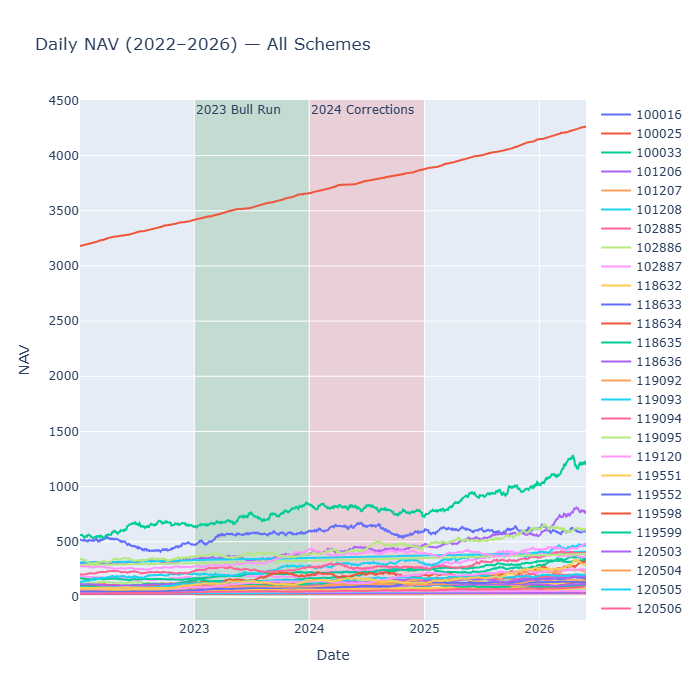
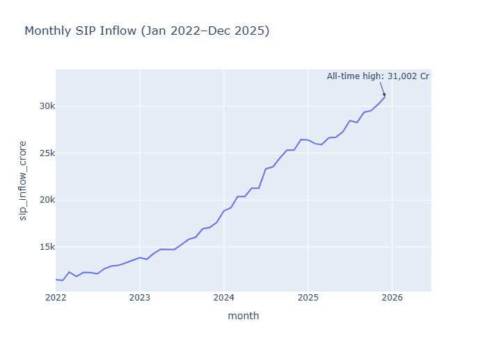
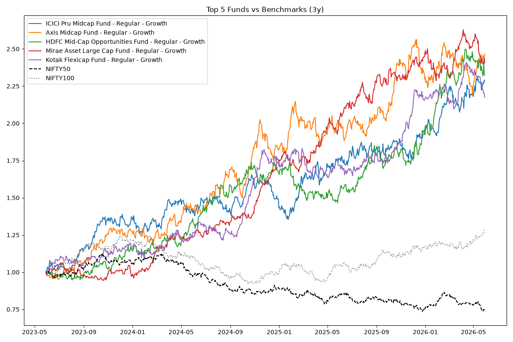
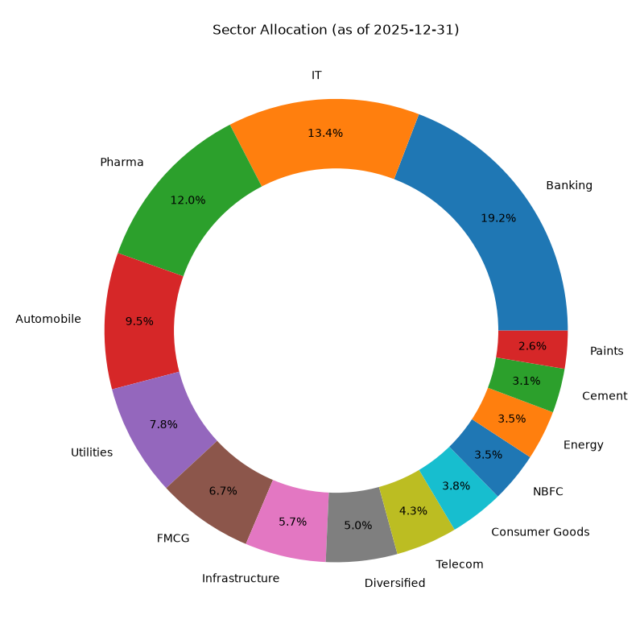
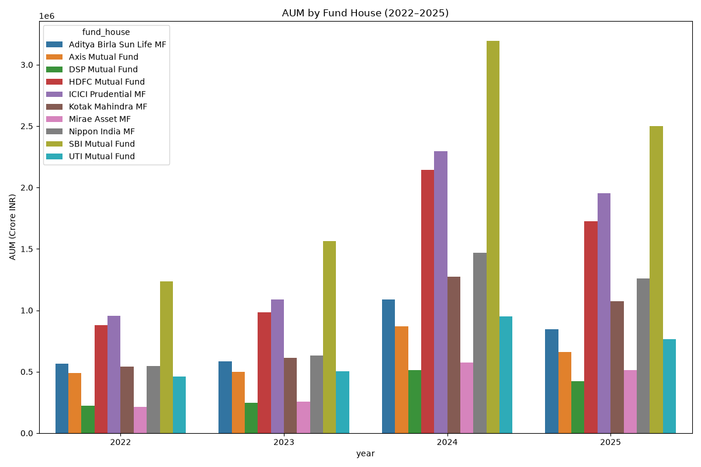

Key Metrics
This dashboard highlights NAV trends, SIP inflows, AUM share, and risk metrics across the fund universe.
NAV Trend

Daily NAV trends across schemes show 2023 gains and 2024 corrections.
SIP Inflows

Monthly SIP inflows demonstrate consistent retail investment growth.
Benchmark Performance

Top funds compared to NIFTY benchmarks over the recent three-year window.
Sector Allocation

Sector exposures from portfolio holdings at the latest reporting date.
AUM Distribution

Yearly AUM growth by fund house highlights concentration among large managers.